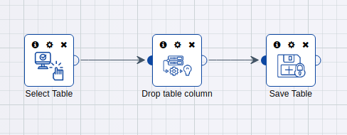
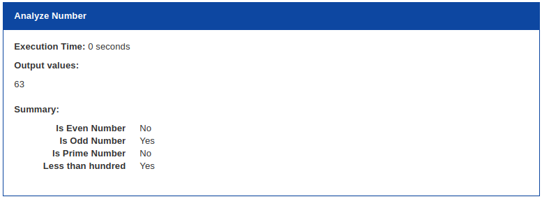
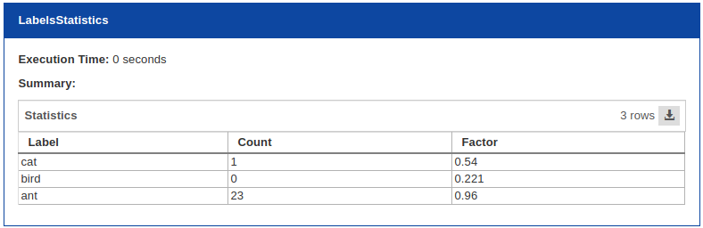
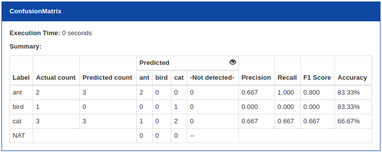
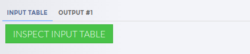
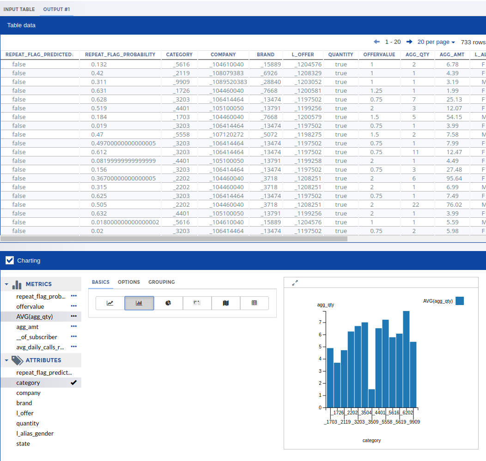

Previous: 4. DeepCortex (DC) Operators
5. Designing Your Own Operators¶
5.1 Operator Design¶
Operator class should override abstract class PipelineOperator from deepcortex.pipelines.pipeline_operator module and implement at least 2 methods:
configure method which configures an instance of the operator. This method should accept parameters and store them in the instance.
apply method that contains the code implementing the operator’s logic.
Also, there is an optional method summary that the user can override in order to output information collected in the apply method; see 5.3 Operator Summaries section for more details The typical operator lifecycle is as follows:
DeepCortex creates an instance of the operator class.
DeepCortex invokes the configure method of the instance and passes parameters configured for the step of the pipeline.
DeepCortex invokes the apply method of the instance and passes inputs configured for the step of the pipeline as named parameters to the method. Returned values are stored as outputs of the step.
DeepCortex invokes the summary method of the instance and stores a returned list of summary-objects in the step results.
In order to make operator available in Canvas you need to decorate your operator with 5.2 @publish decorator from deepcortex.pipelines module.
Below is an example of an operator that accepts a table as an input, drops a single column in that table and returns a modified table as an output. Column name to drop should be configured in operator parameters.
from typing import Tuple, List
from deepcortex.library.tables import Table, from_pandas
from deepcortex.pipelines import PipelineOperator, publish
@publish(
name="Drop table column",
parameters={
'column_name': {
'description': 'Column name to drop'
},
}
)
class DropTableColumn(PipelineOperator):
def apply(self, table: Table) -> Tuple[Table]:
df = table.to_pandas()
new_df = df.drop([self.__column_name], axis=1)
return from_pandas(new_df),
def configure(self, column_name: str):
self.__column_name = column_name
Building the above Operator code as discussed in section 4.3 How to create Operators in DeepCortex? will enable users to then use this custom operator in pipelines on canvas or IDE as shown below:
5.2 @publish decorator¶
@publish decorator is used as the decorator for building / publishing operators for use in Canvas via UI. An operator with @publish decorator that has been build / published becomes available to use on the Canvas via DeepCortex UI.
It should be applied to a class that overrides the deepcortex.pipelines.pipeline_operator.PipelineOperator class and can be configured with the following list of named parameters:
name (mandatory) - short human readable name of the operator.
description (optional) - human readable description of the operator.
parameters (optional) - additional information for parameters like description, list of available values, conditions, etc.
inputs (optional) - additional information about operator inputs.
outputs (optional) - additional information about operator outputs.
custom_component (optional) - reference to custom operator enhancement; see 5.4.3 Custom operator components section for more details.
custom_eda_components (optional) - list of references to EDA enhancements; see 5.4.5 Custom EDA components section for more details.
inspections (optional) - list of named inspections, see 5.4.6 Inspections for more details.
The only mandatory parameter is name. Along with the description they are used only in the UI for visual display.
Usage of custom_component, custom_eda_components and inspections described in section 5.4 Operator enhancements
5.2.1 Operator parameters¶
Operator parameters are arguments for the configure method.
Parameters should be either primitive type, like str, int, float, bool or a list of primitive type like List[str], List[bool], etc.
For example, the following operator has two configuration parameters: numeric magic_number and stringy simple_string.
from typing import Tuple
from deepcortex.pipelines import publish, PipelineOperator
@publish("Example operator")
class ExampleOperator(PipelineOperator):
def apply(self, in: str) -> Tuple[int]:
return len(in),
def configure(self, magic_number: int = 42, simple_string: str = ''):
self.__m = magic_number
self.__s = simple_string
In this case, the system automatically analyzes the signature of the configure method and detects those parameters. It extracts parameter names, types and default values.
However it is possible to specify them manually in order to specify more information for the UI.
from typing import Tuple
from deepcortex.pipelines import publish, PipelineOperator
@publish(
"Example operator",
parameters={
'magic_number': {
'description': 'My Magic Number',
'min': 1,
},
'simple_string': {
'description': 'Very Simple String',
}
}
)
class ExampleOperator(PipelineOperator):
def apply(self, in: str) -> Tuple[int]:
return len(in),
def configure(self, magic_number: int = 42, simple_string: str = ''):
self.__m = magic_number
self.__s = simple_string
The following list of options is available for the parameters:
description - contains human-readable description of the parameter.
default - contains default values for the parameter; however, it is better to avoid specifying default in the decorator. The preferred method is to specify default values in the signature of the configure method.
min - contains minimum value for the numeric parameters.
max - contains maximum value for the numeric parameters.
values - contains a list of possible values for the parameter, makes sense only for stringy and numeric parameters.
conditions - contains a dictionary with conditions for the parameter; see Conditional parameters section for more details.
asset_type contains a type of asset for this parameter; see Using assets as parameters section for more details.
custom_component - contains reference to the custom component for this parameter; see 5.4.4 Custom parameter components section for more details.
Also it is possible to make parameters with multiple values. In order to do this you need to specify the type of the parameter as a List of desired type, for example:
from typing import Tuple, List
from deepcortex.pipelines import publish, PipelineOperator
@publish(
"Example operator",
parameters={
'numbers': {
'description': 'My Magic Numbers',
'min': 0.0,
'max': 1.0,
},
}
)
class ExampleOperator(PipelineOperator):
def apply(self, num: float) -> Tuple[float]:
return len(num),
def configure(self, numbers: List[float]):
self.__m = numbers
In this case the system detects that parameter magic_number has the type float that, can have multiple values, where each value should be between 0.0 and 1.0.
Using assets as parameters¶
If your parameter accepts an ID of an asset, it is possible to tell the UI the type of this asset. In this case, the UI will draw a fancy asset selector component (instead of a simple text box) with the ability to see and search by asset names.
Desired parameter type should be str, because all asset IDs are strings.
For example, if you want to configure your operator with an album ID you can do the following:
from typing import Tuple
from deepcortex.pipelines import publish, PipelineOperator
from deepcortex.pipelines.asset_type import AssetType
from deepcortex import library
from deepcortex.exceptions import NotFoundException
from deepcortex.library.albums import Album
@publish(
'My select album',
parameters = {
'album_id': {
'description': 'Album to load',
'asset_type': AssetType.Album
}
}
)
class MySelectAlbum(PipelineOperator):
def apply(self) -> Tuple[Album]:
album = library.albums.get(self.__album_id)
if album:
return album,
else:
raise NotFoundException()
def configure(self, album_id: str):
self.__album_id = album_id
Conditional parameters¶
Conditions for parameters allows the UI to show/hide some parameters depending on the values of other parameters.
For example, the following operator has four parameters: algorithm, regularity, complexity and complexity_name. The only mandatory parameter is algorithm with possible values of ‘Simple’, ‘Regular’, ‘Complex’.
Parameter regularity should be mandatory only if algorithm is ‘Regular’.
Parameter complexity should be mandatory only if algorithm is ‘Complex’.
Parameter complexity_name should be mandatory only if algorithm is ‘Complex’ and the value of complexity is more that 2.
This is how it looks in the @publish decorator parameters:
from typing import Tuple, List
from deepcortex.pipelines import publish, PipelineOperator
@publish(
"Example operator",
parameters={
'algorithm': {
'description': 'Algorithm',
'values': ['Simple', 'Regular', 'Complex'],
},
'regularity': {
'description': 'Number of regularity',
'conditions': {'algorithm': {'values': ['Regular']}}
},
'complexity': {
'description': 'Number of Complexity',
'conditions': {
'algorithm': {'values': ['Complex']}
}
},
'complexity_name': {
'description': 'Name of Complexity',
'conditions': {
'algorithm': {'values': ['Complex']},
'complexity': {'min': 2},
}
},
}
)
class ExampleOperator(PipelineOperator):
def apply(self, num: float) -> Tuple[float]:
return len(num),
def configure(self,
algorithm: str = 'Simple',
regularity: int = None,
complexity: int = None,
complexity_name: string = None,
):
pass
Conditions should contain a dictionary with a parent parameter name as a key and a dictionary with conditions as a value. The dictionary with conditions could have the following keys:
value with a value of the parent parameter (works only for boolean parameters).
values with the list of values of the parent parameter (works for numeric and stringy parameters).
min with a minimum value of the numeric parent parameter (works for numeric parameters only).
max with a maximum value of the numeric parent parameter (works for numeric parameters only).
Note: you can’t specify the values condition along with min or max in the same parent parameter.
5.2.2 Operator inputs and outputs¶
Inputs are parameters of the apply method of the operator.
Outputs are values of the tuple that must be returned by the apply method of the operator.
Usually the system automatically detects inputs and outputs of the operator by inspecting the signature of the apply method.
from typing import Tuple
from deepcortex.pipelines import publish, PipelineOperator
@publish("Concatenate two strings")
class ConcatenateOperator(PipelineOperator):
def apply(self, first: str, second: str) -> Tuple[str, len]:
result = first + second
return result, len(result)
def configure(self):
pass
However, it is possible to explicitly specify them in the @publish decorator in order to provide human-readable names for the UI.
from typing import Tuple
from deepcortex.pipelines import publish, PipelineOperator, OperatorInput, OperatorOutput
@publish(
"Concatenate two strings"
inputs={
'first': OperatorInput('First string'),
'second': OperatorInput('Second string')
},
outputs=(
OperatorOutput('Result concatenated string'),
OperatorOutput('Length of the result string')
),
)
class ConcatenateOperator(PipelineOperator):
def apply(self, first: str, second: str) -> Tuple[str, len]:
result = first + second
return result, len(result)
def configure(self):
pass
5.3 Operator Summaries¶
During pipeline execution, an operator can collect information/data, store it inside the instance, as well as return it to the user for display.
Method summary should return a list of object derived from class deepcortex.pipelines.operator_application_summary.OperatorApplicationSummary.
Currently, there are 3 derived classes that can be used to represent information stored in different structures:
SimpleSummary - contains an information in the form of a dictionary.
TableSummary - contains an information in the form of a table.
ConfusionMatrix - contains an information in the form of a confusion matrix.
All these classes are located in module deepcortex.pipelines.operator_application_summary.
Method summary can return a list of any combination of these summaries.
SimpleSummary¶
SimpleSummary class accepts a dict with strings as keys and primitive values (that can be casted to strings) as values.
For example:
from typing import Tuple
from math import sqrt
from itertools import count, islice
from deepcortex.pipelines import PipelineOperator, publish
from deepcortex.pipelines.operator_application_summary import SimpleSummary
@publish(
name='Analyze Number',
)
class AnalyzeNumberOperator(PipelineOperator):
def apply(self, x: int) -> Tuple[int]:
self.__x = x
return x,
def configure(self):
pass
def summary(self):
is_prime = self._is_prime(self.__x)
is_even = self.__x % 2 == 0
return [
SimpleSummary({
'Is Prime Number': 'Yes' if is_prime else 'No',
'Is Even Number': 'Yes' if is_even else 'No',
'Is Odd Number': 'No' if is_even else 'Yes',
'Less than hundred': 'Yes' if self.__x < 100 else 'No',
})
]
def _is_prime(self, n: int) -> bool:
return n > 1 and all(n % i for i in islice(count(2), int(sqrt(n)-1)))
Here’s how this operator result will look in the DeepCortex UI:
TableSummary¶
TableSummary class accepts the following parameters in the constructor:
name with the name of the table.
columns with the list of TableSummaryColumn object that represents column names.
values with the list of list of primitive values (strings, integers, floats, booleans).
For example:
from typing import Tuple, List
from deepcortex.pipelines import PipelineOperator, publish
from deepcortex.pipelines.operator_application_summary import \
OperatorApplicationSummary, TableSummary, TableSummaryColumn
@publish('LabelsStatistics')
class LabelsStatisticsOperator(PipelineOperator):
def configure(self):
pass
def apply(self) -> Tuple[None]:
# Here we store results
self.__data = [
["cat", 1, 0.54],
["bird", 0, 0.221],
["ant", 23, 0.96],
]
return None,
def summary(self) -> List[OperatorApplicationSummary]:
# Prepare list of columns
cols = [
TableSummaryColumn("Label"),
TableSummaryColumn("Count"),
TableSummaryColumn("Factor"),
]
# Return confusion matrix
return [
TableSummary(
name="Statistics",
columns=cols,
values=self.__data
)
]
Here’s how this operator result will look in the DeepCortex UI:
ConfusionMatrix¶
See Confusion matrix page on wikipedia for a detailed explanation of what this is.
ConfusionMatrix class accepts two parameters in the constructor:
confusion_matrix_cells with the list of ConfusionMatrixCell objects
labels with the list of labels
ConfusionMatrixCell class accepts the following parameters in the constructor:
value value of the confusion matrix cell
actual_label_index index of the label in the list of labels
predicted_label_index index of the cells row
In order to calculate the confusion matrix itself, you can use, for example, the sklearn.metrics.confusion_matrix function of the skikit-learn library.
For example:
from typing import Tuple, List
from itertools import product
from sklearn.metrics import confusion_matrix
from deepcortex.pipelines import PipelineOperator, publish
from deepcortex.pipelines.operator_application_summary import \
OperatorApplicationSummary, ConfusionMatrix, ConfusionMatrixCell
@publish('ConfusionMatrix')
class ConfusionMatrixOperator(PipelineOperator):
def configure(self):
pass
def apply(self) -> Tuple[None]:
# Here we store results
self.__labels = ["ant", "bird", "cat"]
self.__y_true = ["cat", "ant", "cat", "cat", "ant", "bird"]
self.__y_pred = ["ant", "ant", "cat", "cat", "ant", "cat"]
return None,
def summary(self) -> List[OperatorApplicationSummary]:
# Calculate confusion matrix based on stored results
cm_arr = confusion_matrix(
self.__y_true,
self.__y_pred,
labels=self.__labels
)
# Prepare cells of the confusion matrix summary
cm_cells = [
ConfusionMatrixCell(
value=cm_arr[i, j],
actual_label_index=i,
predicted_label_index=j
)
for (i, j) in product(range(len(self.__labels)), repeat=2)
]
# Return confusion matrix
return [
ConfusionMatrix(
confusion_matrix_cells=cm_cells,
labels=self.__labels
)
]
Here’s how this operator result will look in the DeepCortex UI:
5.4 Operator enhancements¶
Operator Enhancement Overview¶
By default, the DeepCortex UI automatically generates components for operator configuration when editing a pipeline or executing an interactive experiment.
It analyzes parameters of the operator and draws suitable UI component for each of the parameters. For example, if the parameter type is an integer type, the UI shows a text-box input that accepts only numbers. Or, if the parameter definition specifies a list of available values, the UI shows a dropdown that allows the user to select a value without entering them manually with a keyboard.
But sometimes default components are not enough and the operator author wants more interactivity, or a better visual look’n’feel, or more complex validation logic on the UI side. In this case, the user can take advantage of operator enhancements.
Operator enhancements components (aka custom components) are designed to improve the pipeline Canvas UI when working with custom operators.
These enhancements should be Angular 2 components, because they will be embedded into the DeepCortex UI.
Your 4.2 What are DeepCortex (DC) Projects? files tree should contain a directory with an Angular application. This application should have a module that provides a set of custom components.
The template project for custom operator enhancements can be found in our repository:
TODO link to github repo with sample code.
There are three types of custom components that can be embedded into the DeepCortex UI from the operator:
Operator component
Parameter component
EDA component
Each type of component takes a particular part of the operator popup in the UI. See the picture for more details:
Placements for enhancement components in operator parameters popup in DeepCortex UI.¶
The green box indicates -5.4.3 Custom operator components, the blue box indicates 5.4.5 Custom EDA components and the red boxes indicate places of 5.4.4 Custom parameter components
During an interactive experiment, all components have the ability to execute some python code (see 5.4.6 Inspections section) in order to receive data from the executing experiment.
5.4.1 How to write your own custom component¶
A custom component is an Angular 2 component that implements a particular interface. For each type of component, the interface is slightly different. However, there are common methods for all components. Each component should implement at least two methods:
configure - accepts an optional object with options. The options can be configured on the python operator level with component_params; see 5.4.2 How to specify a custom component in the operator section.
setContext - accepts an object with the context; see Context of custom component section with detailed explanation of context.
In addition, 5.4.3 Custom operator components should also have the following properties:
valuesChange with type Observable<ParameterValues>,
validityChange with type Observable<boolean>.
5.4.4 Custom parameter components should have the following property:
valueChange with type Observable<ParameterValue>.
Context of custom component¶
Context is a JavaScript object that contains the following properties:
operator with information about operator.
parameterValues with an object containing names and values of the operator parameters.
inputs with an object containing names and information of the inputs connected to the current step.
stepId with id of the current step.
invoker function that calls inspections, see 5.4.6 Inspections section for more details.
Example of custom component¶
As an example let’s make a component that allows a user to set up an integer parameter in a more comfortable way with a mouse instead of entering it manually.
Note: File names are fictional file names that reflect an approximate location of the file.
File ui/src/components/integer-number.component.ts:
Also we should export this component in the angular module with a particular name:
File ui/src/components.module.ts:
5.4.2 How to specify a custom component in the operator¶
In order to specify a custom component, an operator author should use the CustomComponentReference.for_location helper function.
This helper accepts 2 positional parameters and one named optional parameter:
module_location - directory in the 4.1 What are DeepCortex (DC) Operators? files tree where Angular application with custom components is located.
component name - the name of the component as specified in the definition of the angular module that provides component.
component_params - optional named parameter that specifies dict with options for the UI component. It allows configuring a generic-component (or any component that allows configuration) for usage with a particular operator.
5.4.3 Custom operator components¶
This enhancement should include the UI for configuring all operator’s parameters. If it is specified for the operator, the Deepcortex UI will not render any generic-component for operator parameters or EDA-components. Instead, it renders only custom operator components and other components specified for this operator (5.4.4 Custom parameter components and 5.4.5 Custom EDA components) will be ignored.
Custom operator components can be specified via the custom_component parameter of the 5.2 @publish decorator like this:
from typing import Tuple
from deepcortex.pipelines import PipelineOperator, publish, CustomComponentReference
@publish(
name='MyOperator',
custom_component=CustomComponentReference.for_location(
'path_to_ui_project_directory', # path to the angular project inside your DC Project
'component-identifier', # angular provider identifier
component_params={} # dict with parameters for UI component,
# this dict will be passed to configure call
# on displaying component in the DeepCortex UI
)
)
class MyOperator(PipelineOperator):
def apply(self, input: int) -> Tuple[int]:
return
def configure(self):
pass
5.4.4 Custom parameter components¶
This enhancement replaces control of a single parameter in the auto-generated operator parameters form in the operator popup. The purpose of this component is to improve visualization of the particular parameter of the operator.
In order to use it we should specify it via the custom_component parameter inside the parameter configuration of the 5.2 @publish decorator using the CustomComponentReference.for_location helper
For example, let’s specify our comfy-integer-number-input component from the 5.4.1 How to write your own custom component section in the operator:
from typing import Tuple
from deepcortex.pipelines import PipelineOperator, publish, CustomComponentReference
@publish(
name='pow(x)',
parameters={
'pow': {
'description: 'Raises the number to the power. Power could be specified.',
'custom_component': CustomComponentReference.for_location(
'ui', # assume that our Angular project located in this subdirectory
'comfy-integer-number-input', # name as specified in module
'component_params'={'step': 2} # Since our component accepts
# 'step' option, we can set it up
)
}
}
)
class PowerNumberOperator(PipelineOperator):
def apply(self, x: int) -> Tuple[int]:
return x ** self.__pow
def configure(self, pow: int):
self.__pow = pow
5.4.5 Custom EDA components¶
This enhancement will be appended to the bottom of the auto-generated operator parameters form in the operator popup.
EDA components can be useful to inspect inputs and outputs of the operator during an interactive experiment.
from typing import Tuple
from deepcortex.pipelines import PipelineOperator, publish, CustomComponentReference
@publish(
name='MyOperator',
custom_eda_components=[
CustomComponentReference.for_location(
'path_to_ui_project_directory',
'component-identifier',
component_params={}
)
]
)
class MyOperator(PipelineOperator):
def apply(self, input: int) -> Tuple[int]:
return
def configure(self):
pass
5.4.6 Inspections¶
If a component is invoked in the interactive experiment mode, it has the ability to call a python function and get its result if it is serializable into JSON.
This operation is called an inspection because there is a possibility to pass the desired output of the executed pipeline step to the target python function in order to analyze it.
In order to make a python function available for invoking from the typescript custom component, you need to perform the following steps:
Create a python function in your 4.1 What are DeepCortex (DC) Operators?, for example
from typing import List def example_inspection_function(x: int) -> List[int]: return x * x,
In the operator @publish decorator you need to specify the parameter inspections and provide a name for your inspection like this:
from my_package.my_function_module import example_inspection_function @publish( name='MyOperator', inspections={ 'square_the_number': example_inspection_function }, custom_eda_components=[ # This is our component that going to invoke inspection CustomComponentReference.for_location( 'path_to_ui_project_directory', 'my-eda-component' ) ] ) class MyOperator(PipelineOperator): def apply(self, input: int) -> Tuple[int]: return def configure(self): pass
Now, in the custom component code you may use the invoker property of the context in order to call the inspection by name, for example:
export class MyEDAComponent implements CustomComponent.IEDAComponent { private context: CustomComponent.IEDAContext; public configure(options?: { [p: string]: any }) {} public setContext(context: CustomComponent.IEDAContext): void { /* * Here we accept context object and put in it component property * in order to use it later. */ this.context = context; } private _onButtonClick() { /* * This function will be the handler for a button click. * Here we are going to invoke a python function and show * the results to the user. */ if (this.context.invoker) { /* * Get invoker from context and call it with 3 arguments: * - inspection name, * - pipeline stepId, * - object with parameters for inspection */ this.context.invoker( 'square_the_number', // this is inspection name this.context.stepId, // pipeline step ID {x: 5} // parameters for the inspection function ).subscribe(res => { alert('Result of the inspection is: ' + res); }) } else { alert('Not in interactive mode'); } } }
However, it will be more useful if we dont’ pass static data to the inspection, but rather a result from the executed step of the interactive experiment.
In this example, we make an inspection that analyses a table and returns a list of column names.
Here’s how our inspection function will look:
from typing import List
from deepcortex.library.tables import Table
def get_table_column_names(table: Table) -> List[str]:
column_names = []
if table.columns is not None:
for column in table.columns:
column_names.append(column.name)
return column_names
Now let’s make a UI component that gets a list of column names and puts them on the screen.
Not let’s put them into our operator:
from typing import Tuple
from deepcortex.library.tables import Table
from deepcortex.pipelines import PipelineOperator, publish, CustomComponentReference
from my_package.my_function_module import get_table_column_names
@publish(
name='MyTableOperator',
inspections={
'get_column_names': get_table_column_names
},
custom_eda_components=[
# This is our component that's going to invoke inspection
CustomComponentReference.for_location(
'path_to_ui_project_directory',
'show-columns-component'
)
]
)
class MyOperator(PipelineOperator):
def apply(self, table: Table) -> Tuple[Table]:
return table
def configure(self):
pass
5.4.7 Builtin operator enhancements¶
DeepCortex has a set of ready-to-use enhancements that the user can use in their operators. An example of such an enhancement is deatailed below:
5.4.7.1 Tabular charting¶
Tabular charting is an operator enhancement that allows inspecting operator Table-typed inputs/outputs and perform some exploratory data analysis on the table data.
It should allow the user to:
see input and output table(s) (with column names) and allow them to browse their content with sorting and pagination.
perform exploratory data analysis on input and output tables e.g., create a variety of charts.
How to use it¶
In order to apply this enhancement to your operator you need to import tabular_eda_component from from deepcortex.tabular.charting and use it in the -:ref: custom_EDA_component parameter of -:ref: publish_decorator.
from deepcortex.library.tables import Table
from deepcortex.pipelines import PipelineOperator, publish
from deepcortex.tabular.charting import tabular_eda_component
@publish({
name='My operator',
custom_eda_components = [tabular_eda_component]
})
class MyOperator():
def apply:(self, input_table: Table) -> Tuple[Table]:
return input_table
def configure(self):
pass
In the example above, the tabular_eda_component will be attached to all input and output tables of the operator.
If you want to inspect only a particular input/output, you can provide parameters using the configure method.
You should pass a dictionary with a key attachTo and a value that is a list of dictionaries to the configure method. Each underlying dictionary should be one of the following:
has key inputName with the name of the operator’s input you want to inspect as a value.
has key outputIndex with the index of the desired output.
For example:
from deepcortex.library.tables import Table
from deepcortex.pipelines import PipelineOperator, publish
from deepcortex.tabular.charting import tabular_eda_component
@publish({
name='My operator',
custom_eda_components = [
tabular_eda_component.configure({
# Despite the fact the operator has 2 input tables and 2 output
# tables, we want to only inspect the input table named 'second'
# and the first output table (with index 0 in the output tuple).
attachTo: [
{ 'inputName': 'second' },
{ 'outputIndex': 0 },
]
})
]
})
class MyOperator():
#
# This operator has two input tables: 'first' and 'second and two output
# tables with indecies 0 and 1.
#
def apply:(self, first: Table, second: Table) -> Tuple[Table, Table]:
return (input_table, input_table)
def configure(self):
pass
In the example above, the table charting component will inspect only the input table named ‘second’ and the first output table.
How it looks¶
By default, the component is “disabled”. It shows only tabs for each attached input/output and the button “Inspect …”.
In order to enable EDA, the user should click the “Inspect…” button.
Once the component is enabled it starts loading table columns and table contents.
The enabled component contains two parts:
Table view. This is a simple table-browser.
Charting. This section is collapsed by default and the user has to click on the checkbox in order to expand charting options. Once expanded, it displays three columns:
In the left column, the user can select metrics and attributes.
The middle column allows the user to select a chart type (in Basics tab), set up some additional configuration options depending on the selected chart type (in Options tab), and define some value groups (in Grouping tab).
Aggregation results are visualised by the selected chart type. The user can expand the chart to make it wider. In this case, the middle column hides and the chart becomes wider.